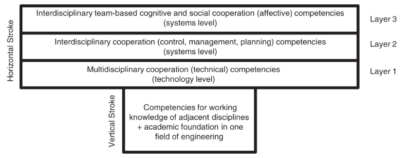
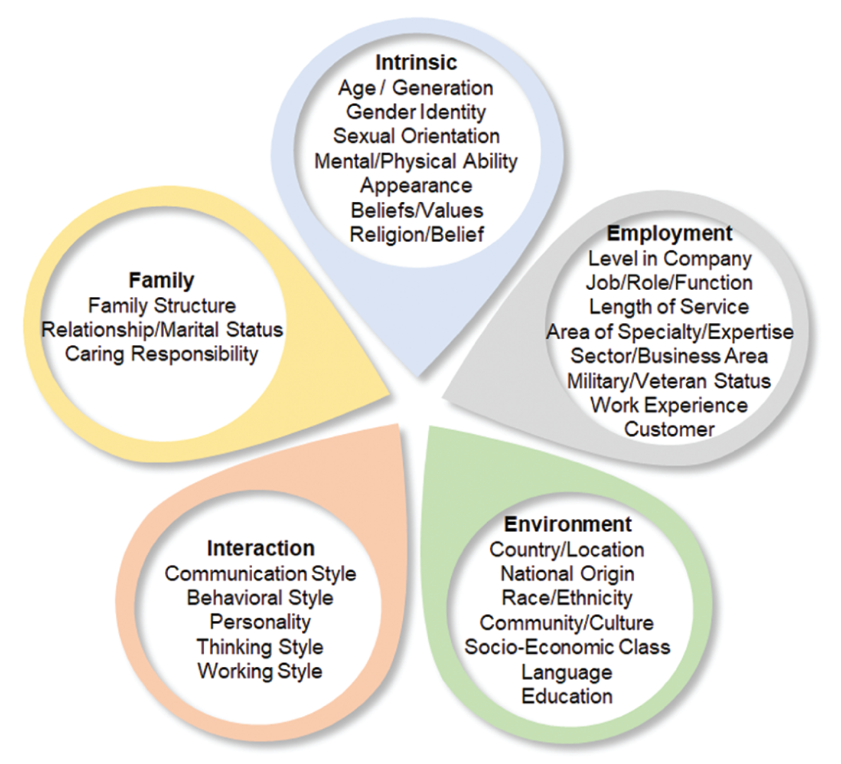
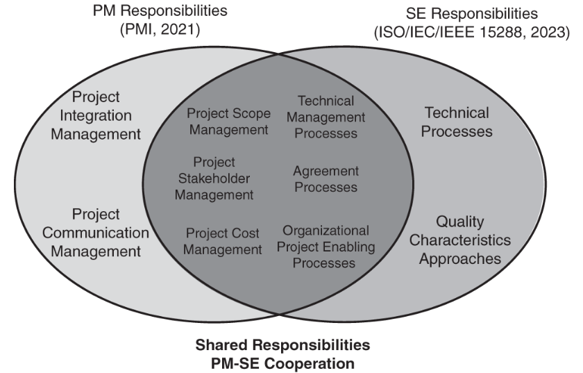
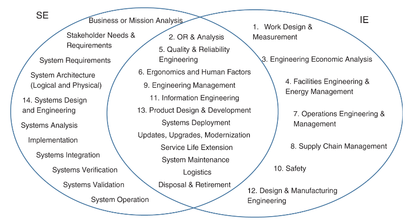

class: center, middle # CSEP Study Week 12 --- ## Chapter 5 - Systems Engineering in Practice ### Section 5.1 SE Competencies * Competence is the ability to perform an activity or a task. * Competency is the set of skills required in the performance of a job. The INCOSE Systems Engineering Competency Framework (SECF) (2018) > provides a set of competencies that identify knowledge, skills, abilities, and behaviors important to effective SE that can be applied in any domain context. The INCOSE SECF spans a wide range of competencies organized into five themes: core, professional, technical, management, and integrating The INCOSE Systems Engineering Competency Assessment Guide (SECAG) (2022) > guidance on how to evaluate individuals for proficiency in the competencies and how to differentiate between proficiency at each of five levels defined within the INCOSE SECF. --- ## T-shaped professional expertise  --- ## 5.1.1 Hard and soft skills > "The complexity of modern system designs, the severity of their constraints, and the need to succeed in a high tempo, high-stakes environment where competitive advantage matters, demands the highest levels of technical excellence and integrity throughout the life cycle" (INCOSE SECF, 2018, Page 47). ### Hard Skills * Concrete definitions * Measurable * Testable * Individual application * Low self-awareness required * Personal affect has low impact --- ### Soft Skills * Subjective definitions * Difficult to measure * Difficult to test * Social application * High self-awareness required * Personal affect has high impact --- ### 5.1.2 Systems Engineering Professional Competencies SE practitioners are trusted to apply reasoning, judgment, and problem solving to reach unbiased, informed, and potentially significant decisions because of their specialized knowledge, skills, abilities, and behaviors. --- ### 5.1.3 Technical Leadership Technical Leadership is leadership in situations that involve technology. Strong technical leadership is critical for the successful development, operation, sustainment, and evolution of engineered systems. --- ### 5.1.4 Ethics > The practice of SE can result in significant social and environmental benefits, but only if unintended and undesired effects are considered and mitigated. Read the [INCOSE Code of Ethics](https://www.incose.org/about-incose/code-of-ethics) --- ## 5.2 Diversity, Equity, and Inclusion *Diversity* is the range of human differences, encompassing the characteristics that make one individual or group different from another. *Equity* is the fair treatment, access, opportunity and advancement for all people, achieved by intentional focus on their disparate needs, conditions, and abilities. *Inclusion* is the intentional, proactive, and continuing efforts and practices in which all members respect, support, and value others. DEI is vital to successful SE because of the wide range of contexts in which SE is applied and the consideration of multiple stakeholder viewpoints at the heart of the systems approach. ---  --- ## 5.3 Systems Engineering Relationships with other Disciplines ### 5.3.1 SE and Software Engineering (SWE) ISO/IEC TR 19759 (2015) defines SWE as: > The application of a systematic, disciplined, quantifiable approach to the development, operation, and maintenance of software; that is, the application of engineering to software. Software often provides or facilitates provision of the following system attributes: functionality, behavior, quality characteristics (QCs), and system interfaces (both internal and external). Software embedded in software-intensive systems can also monitor system performance and provide observable performance indicators. The differences between software elements and physical elements present significant challenges for SE practitioners when facilitating development and modification of software-intensive systems. --- #### Relationship to SE and impacts The relationship of SWE to SE is becoming increasingly important because software is a large and growing part of modern systems. SE practitioners who develop software-intensive systems are, as always, concerned with facilitating development of systems that are delivered in a timely manner, that satisfy performance parameters, and that can be modified efficiently and effectively. SE practitioners can better achieve these goals by taking advantage of the expertise of SWE practitioners, but they may fail to do so because they may not be familiar with the culture, terminology, and practices of SWE. SWE practitioners may not contribute their expertise because they are not consulted or if consulted may have insufficient knowledge of system level issues to provide recommendations. I --- ### 5.3.2 SE and Hardware Engineering (HWE) HWE includes the development and implementation of physical elements for systems, enabling systems, and support equipment for systems. HWE includes mechanical engineering (ME) for mechanical elements and electrical engineering (EE) for electrical and electronic elements. --- #### Relationship to SE and impacts The SE team must assist the hardware team in establishing hardware requirements, physical interface requirements, and establishing and tracking key physical measures (e.g., size, weight, and power (SWaP) budgets) at every level of the system architecture. Hardware material selection is supported by existing application or domain-specific standards. On a smaller, less complicated systems, HWE may be able to select all materials without the need of a formal SE process. With the increasing complexity of large systems and SoSs, the role of SE in hardware material selection becomes paramount, especially in applications where human lives could be affected. --- ### 5.3.3 SE and Project Management (PM) The application of knowledge, skills, tools, and techniques to project activities to meet the project requirements.(PMI, 2022) --- #### Relationship to SE and impacts While SE and PM are distinct disciplines, extensive research has shown that effective integration between PM and SE improves project performance, achieving better results in schedule and budget performance, as well as stakeholder requirements satisfaction, when compared with projects with lesser integration. A high degree of integration between PM and SE is characterized by collaborative decision making, a shared responsibility toward a common goal, having the project manager involved in technical aspects of the project, and having the SE practitioners involved in programmatic aspects of the project. ---  --- ### 5.3.4 SE and Industrial Engineering (IE) Optimizing the utilization of human resources, facilities, equipment, tools, technologies, information, and handling of materials to produce quality products and services safely and cost-effectively considering the needs of customers and employers. #### Relationship to SE and impacts There are some significant overlaps. IE and SE practitioners must work closely with each other to accomplish the goals of the project. Different organizations use different job titles for IE and SE, and the same job title may have different responsibilities in different organizations. ---  --- ### 5.3.5 SE and Operations Research (OR) The scientific process of transforming data into insights using advanced analytical methods to making better decisions.(INFORMS, 2022) A branch of applied mathematics, OR includes wide range of approaches. Common to all is the establishment of a model to represent the system to support analysis for decision making. In some cases, the model may be solved directly, but other common approaches include optimization, simulation, and decision analysis. #### Relationship to SE and impacts OR techniques frequently support SE by assisting in understanding stakeholder needs and estimating how a proposed system will behave. Decision analysis is used to elicit stakeholder needs and preferences to construct a value model. The value model is used to understand value tradeoffs between different system or system element alternatives. --- ## 5.4 Digital Engineering > An integrated digital approach that uses authoritative sources of systems’ data and models as a continuum across disciplines to support life cycle activities from concept through [retirement]. [DAU] Model-based SE (MBSE) (see Section 4.2.1) is one of core elements of Digital Engineering. In MBSE and Digital Engineering, a Digital System Model is a digital representation of a system. A *digital twin* is a digital surrogate of the system, incorporating models to emulate the actual system or some of its elements. The digital twin evolves through the life cycle with the mission and definition of the system. A *digital thread* is a set of interconnected, cross-discipline model data that seamlessly expedite the controlled interplay of *digital artifacts* to inform decision makers throughout a system’s life cycle. --- ### Digital Engineering in Projects As each life cycle stage is considered, it is critical to research and document opportunities for future project use, as well as for reuse of models, simulations, and data across the life cycle. For example, models and simulations developed during earlier life cycle stages may be reused for verification and training in later life cycle stages. --- ### Digital Engineering for the Enterprise To achieve maximum benefit both project and enterprise level concerns should be considered together. Enterprise level implementation efforts are necessary to position the engineering infrastructure and environment so that a project will be able to perform their engineering activities in a digital manner. Consistent use of the infrastructure and environment on a project and across projects, will yield increasingly consistent engineering work products. Consistency across work products will lead to great gains in reuse and will enable greater speed through computer automation. --- ### Digital Engineering Ecosystem The Digital Engineering ecosystem should be treated as an SoS and must be developed using SE good practices. The Digital Engineering ecosystem consists of the models, tools, processes, and people/roles that come together to develop the systems the organization cares about. --- ## 5.5 Systems Engineering Transformation Three important transformations to be considered: 1. Transforming from no SE to full use of SE, 2. The internal SE from traditional to agile methodologies as appropriate, and 3. The internal SE from document-based to model-based disciplines. --- ### Model Based Transfomation * Knowledge representation and immersive technologies, * Product (System) modeling, * Model-based SE (MBSE) approaches and methods, * Virtual prototyping and virtual product integration at scale, * Foundational theory, principles, and heuristics, and MBSE in support of Digital Engineering. --- ## 5.6 Future of SE INCOSE’s Future of Systems Engineering (FuSE) is a systems community initiative to realize the INCOSE Vision 2035 (2022) and to evolve the instruction, practice, and perception of SE to: * Position the discipline to leverage new technologies in collaboration with allied fields, * Enhance SE’s ability to solve the emerging challenges, and * Promote SE as essential for achieving success and delivering value in the engineering of socio-cyber-physical systems and SoSs at scale and subject to non-deterministic influences and effects.